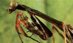
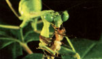
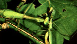
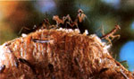

Here's the fifteenth in a series of articles that will hep you tell friend from foe in your garden.
Part XV: The Praying Mantis
If you're like most folks, you probably stoop occasionally to inspect an insect. But how would you feel if the bug you were looking at slowly turned its head and stared back at you? Well, the praying mantis can do just that. In fact, it has the distinction of being the only predatory insect that can swivel its head to look over its shoulder. (The praying mantis is one species [Mantis religiosa] of the mantid family [Mantidae] and is also commonly known as the praying mantid. Most mantid species found in North America share the same general characteristics and are often referred to as mantises.)
Additionally, the mantis is endowed with specially adapted forelimbs that are held in a prayerlike position while the voracious predator awaits its lunch. But, of course, this namesake pose is just that . . . a pose. (As one entomologist quipped, "The only thing mantids would seem to pray for is a square meal.") In fact, a mantid's forelimbs-rather than being hands designed for supplication-are greatly enlarged legs that are lined with sharp spines and can snap out with lightning speed to snatch up a victim and hold it fast while the mantis devours it alive. (All in all, highly irreverent behavior.)
In contrast to those outsized, raptorial forelimbs, the four remaining legs are spindly. But no matter, really, since the mantis doesn't chase down its prey; rather, it waits patiently in ambush for dinner to stroll or flutter by. Since it's not a picky eater, the mantis will gobble up just about any sort of insect that happens along. Larger mantids have even been known to tackle lizards and small birds, and though they're not generally aggressive toward humans, some can inflict nasty bites if handled carelessly.
Members of the family Mantidae are long and slender, with some species reaching four inches or more in length. Most of the largest varieties, including the majority of those sold for insect control, arrived in the U.S. by accident: In 1899 they were brought in on nursery stock imported from Europe. Despite its formidable size, the mantid's green or brown camouflage makes it extremely difficult to spot as it sits motionless against a background of foliage.
During courtship, the male mantis must sneak up on the female from behind, using great caution-for if she spots him before he can grasp her, she'll kill and eat him. End of romance. But should the male be successful in wooing his flame into mating with him, he may well have romanced himself out of the frying pan and into the fire. The female mantises, which are much larger than the males, will sometimes bite the heads off their lovers-even as the mating ritual progresses (talk about losing your head for love!). Interestingly, though, removing the male's head may trigger even more aggressive mating (at least until the bride gets around to finishing her meal).
When the time comes for the fertilized female to lay her eggs (usually in the fall of the year), she seeks out a small branch to serve as a nesting platform. With her eggs deposited- usually in clusters of 80 to 100-mother mantis covers them with a frothy secretion that dries into a substance with a consistency something like Styrofoam. Thus insulated against the cold and somewhat protected from insect-eating creatures, the eggs pass the winter to hatch the following spring.
The young mantids-which resemble adults except for their smaller size, some subtle differences in coloration, and the absence of visible wings-undergo a simple metamorphosis by molting each time they grow too large for their old skins. By late summer or early fall, the spring's mantid hatch is fully grown and ready to mate-thus completing the life cycle.
As I mentioned earlier, mantids are advertised and sold (generally by mail order) for the purpose of controlling garden insects. The trouble is, while these hungry hunters will indeed put a dent in your garden's pest population, they'll also seriously reduce the number of beneficial insects. (A mantis has never been known to ask "friend or foe?" before snatching up and wolfing down a passing bug.) Consequently, if you're having problems with a particular type of insect pest and wish to try biological control methods, the best bet isn't mantids, but host-specific insect predators and parasites purchased from a reputable insectary.
That's not to say you should destroy any mantises you might spot praying (and preying) in your garden, since a few native mantids will do a garden's ecosystem no harm, and this shark of the insect world makes an interesting addition to the backyard fauna. After all, how many other insects have the gumption and ability to turn their heads and look you right in the eye when you rudely stare at them . . . much less the piety to "pray" before each and every meal?
|
 The outsized and spiked front legs reveal the irrevent intent concealed behind the prayerlike pose of this California mantis. |
 A Mediterranean mantis (dining on a cricket) prefers to devour its meals headfirst. |
 Not being temperamentally suited to dripping suitable hints, this female mantis gives the kiss of death to a star-crossed Romeo. |
|
 Newly hatched mantids rest atop their protectve egg case. |
|
|